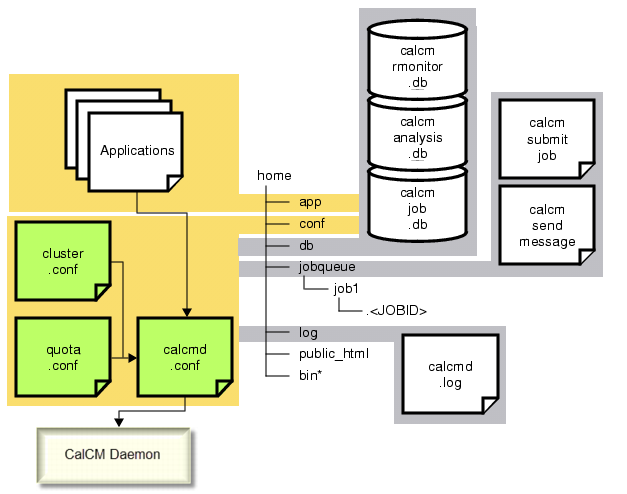

There exists
a handful of actions that you must perform prior to migrating the
CalCM daemon to a different Calibre version.
Procedure
- Begin by making an official
request for a non-production cluster for CalCM migration testing.
- Request
an isolated, exclusively reserved cluster (>= 2 1 primary, >= 200
30 remotes).
Hardware
and network specifications should be comparable to the production CalCM
environment.
Note: Be sure
that no other users are allowed to use any of the remotes or primaries
in parallel while the migration process is underway.
- Recommend cluster reservation
(2 weeks).
Time
frame can vary and may need to be negotiated for more or less time.
Time
dependencies for the migration are typically a direct function of
the acceptance criteria and testing time.
With
an experienced CalCM user and no testing, the migration process
could be scripted and performed in under an hour.
- Make a copy of the production
CALCM_HOME directory to a temporary location for testing. For example:
% setenv CALCM_HOME ./home
% mkdir -p ./tmp
% cp -r $CALCM_HOME ./tmp
- Verify the temporary location
contains all of the necessary files (for example, databases, applications,
configuration files, and log files) and the directory structure that
CalCM requires during startup as shown in Figure 1.
Figure 1. CalCM Files Needed
for the Migration
- CALCM_HOME should originally
point to the directory from which the production CalCM daemon was
initially launched. This directory contains subdirectories like app, jobqueue,
and public_html.
CAUTION: Be sure to copy and
not move the directory as this will cause the production CalCM daemon
to stop functioning correctly.
- Unpack and install the new
Calibre version for which the CalCM daemon is slated to be started
with.
- Once Calibre is available,
copy the release applications from the new MGC_HOME tree into the app directory.
Note: If non-released applications
exist, remove them from the app directory first,
before performing this step. After the release applications have
been copied into the app directory, then move
back the non-release applications.
% rm $CALCM_HOME/app/* // removes the old copies of applications
% cp $MGC_HOME/pkgs/icv_calcm/tcl/* $CALCM_HOME/app/.
Note: This
directive assumes that the calcmd.conf file
contains the absolute paths to the local application files in the
application directory (./app) which are passed
as the primary argument to the APPLICATION TCL statements.
- Make any changes to the configuration
files as required by the new CalCM version.
- For some releases, new release
applications may become mandatory to use. In doing so, the ./conf/calcmd.conf file
should be updated to reflect the necessary changes.
- For some releases, applications
may be updated such that they have a new option or may require a
new argument to be provided. In doing so, the ./conf/calcmd.conf file should
be updated to reflect the necessary changes.
- Collect three or more test
cases that can be used for qualification of CalCM overtime (not
just for testing a single CalCM release). Criteria for the tests:
Each Calibre job must be
run in Calibre MTflex mode (estimated time to completion of >=1
hour).
Preferred Calibre products
to test are Calibre nmOPC, Calibre OPCverify, and Calibre MDP.
Always run on the same
client Calibre version.
Note: Except for the first
time running the test, do not use the CalCM daemon version of Calibre
as overtime, as it will always be newer than the test cases.
Optional. Run one test
with Hyperscaling.